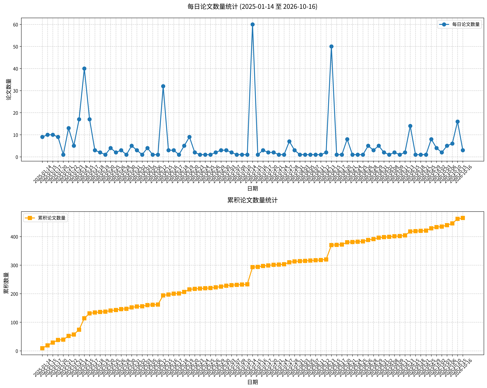

原文标题： Hippocampal Cc2d1a/Freud-1 knockdown alters serotonin and dopamine systems and depressive-like behavior in ASC (Antidepressants Sensitive Catalepsy) male mice.
摘要： 脑内单胺系统调控广泛的行为谱。5-羟色胺（5-HT）传统上与抑郁相关，而多巴胺（DA）与快感缺失和动机受损相关。5-HT1A受体（Htr1a）和DRD2受体（Drd2）的基因共享一个共同转录因子Freud-1，由Cc2d1a编码。我们研究了在遗传易感抑郁样行为的ASC（抗抑郁药敏感性僵住症）雄性小鼠中，通过体内腺相关病毒载体敲低海马Cc2d1a/Freud-1对行为及脑内5-HT和DA系统的影响。经mRNA和蛋白水平证实的Cc2d1a/Freud-1敲低导致Htr1a和Drd2表达去抑制，减少不动时间，并降低僵住症测试中僵住小鼠的百分比。它减轻了强迫游泳测试中的抑郁样行为，改善了居住者-入侵者测试中的社会互动，并增强了Morris水迷宫中的空间记忆，而不影响快感缺失或焦虑。在实验动物中，通过8-OH-DPAT诱导的低体温评估的5-HT1A受体功能活性增加，而通过25CN-NBOH诱导的甩头反应评估的5-HT2A受体活性降低。Cc2d1a/Freud-1敲低还提高了海马儿茶酚-O-甲基转移酶mRNA水平、单胺氧化酶A蛋白水平以及中脑色氨酸羟化酶-2活性。DA和5-HT与其代谢产物的比值保持不变。我们的发现表明，Cc2d1a/Freud-1参与情绪和社会行为，可能通过调节5-羟色胺能信号传导和5-HT受体功能实现。本研究突出表明海马Cc2d1a是抑郁相关表型中单胺能系统的潜在转录调节因子。
关键词： 情绪行为；社会互动；5-羟色胺系统；多巴胺系统；Freud-1/Cc2d1a
论文链接： PubMed
原文标题： Chronic activation of estrogen receptor α and β produces opposite effects on anxiety- and fear-related behaviors in female mice.
摘要： 焦虑和恐惧在过度时可能损害日常功能，且女性比男性更易患焦虑和抑郁相关障碍。已知雌激素影响情绪相关行为，但其潜在机制尚不清楚。既往研究表明，长期给予高剂量苯甲酸雌二醇（EB）可改变雌性小鼠的情绪行为。本研究利用各受体亚型的选择性激动剂，探讨了雌激素受体（ER）亚型ERα和ERβ在EB行为效应中的作用。连续2周给予选择性ERα激动剂丙基吡唑三醇，在零迷宫和恐惧条件化测试中增加了去卵巢雌性小鼠的焦虑和恐惧相关行为，其效应与高剂量EB相当。相反，给予ERβ激动剂二芳基丙腈则减少了这些情绪相关行为。这些发现表明，选择性激活ERα足以重现长期高剂量EB处理所诱导的行为效应，而选择性激活ERβ则产生相反效应。
关键词： 雌激素受体α；雌激素受体β；焦虑；恐惧；情绪相关行为
论文链接： PubMed
原文标题： Brainstem raphe nuclei and their serotonergic neurons: An integrative review of distribution, function and projection.
摘要： 脑干中缝核中的5-羟色胺能神经元在广泛的生理和心理过程中发挥核心作用。这些神经元通过向多个脑区的广泛上行和下行投射，形成复杂的神经调控网络。它们 critical 地参与整合和优化神经信号传递以维持正常的生理稳态，并在情绪加工、认知决策和行为调控等高级脑功能中发挥关键作用。5-羟色胺能网络的功能失调与抑郁症、焦虑症和睡眠障碍等神经精神疾病的发生和进展密切相关。因此，全面理解其解剖学、生理学和调控动力学有助于阐明脑功能的基本原理，并为设计靶向5-羟色胺的治疗策略奠定关键基础。尽管相关研究已取得实质性进展，但关于5-羟色胺能神经元的复杂调控机制及其在神经网络中的动态变化仍存在许多未解问题。本综述详细阐述了其在情绪调节、奖赏加工、认知功能、睡眠-觉醒周期和行为控制中的解剖分布和生理功能。我们进一步分析了其上行和下行投射如何支持这些功能，以及其他脑区如何通过投射对其进行调控，从而提供其在神经网络中动态作用的整体视角。
关键词： 中缝核；5-羟色胺能神经元；情绪调节；神经投射；神经调控
论文链接： PubMed
